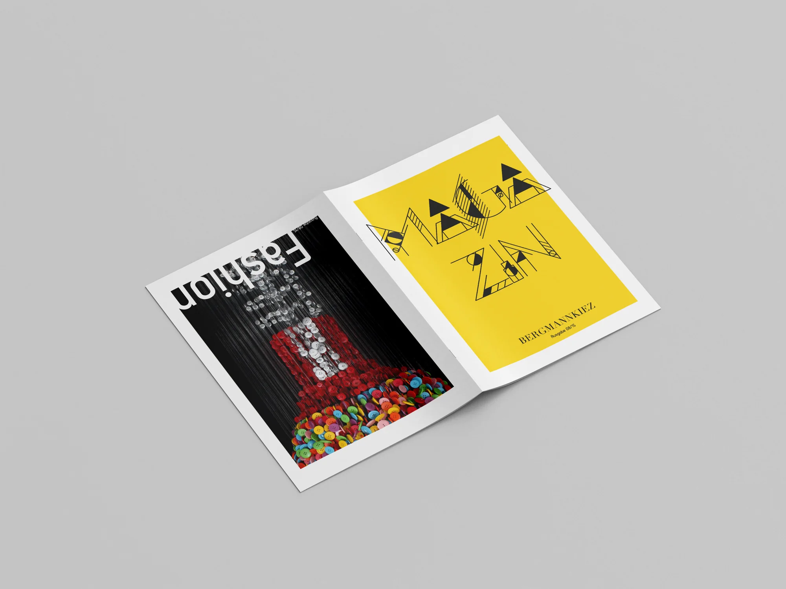
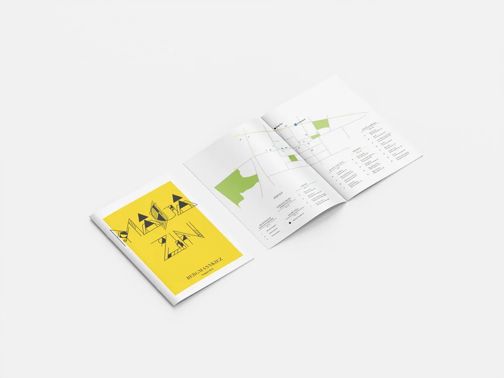
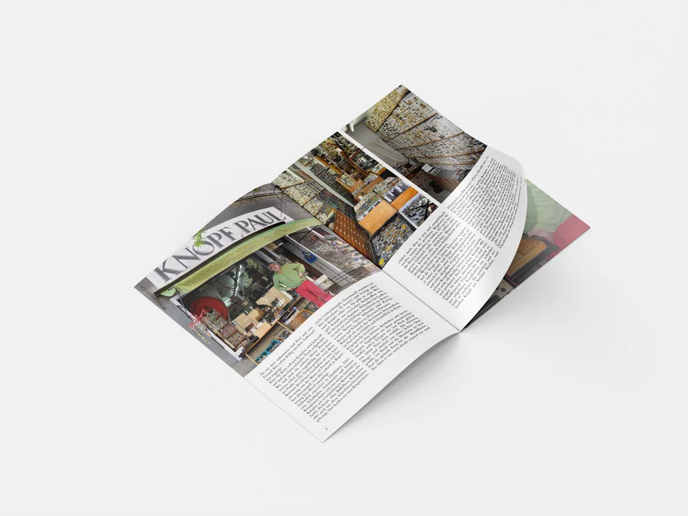
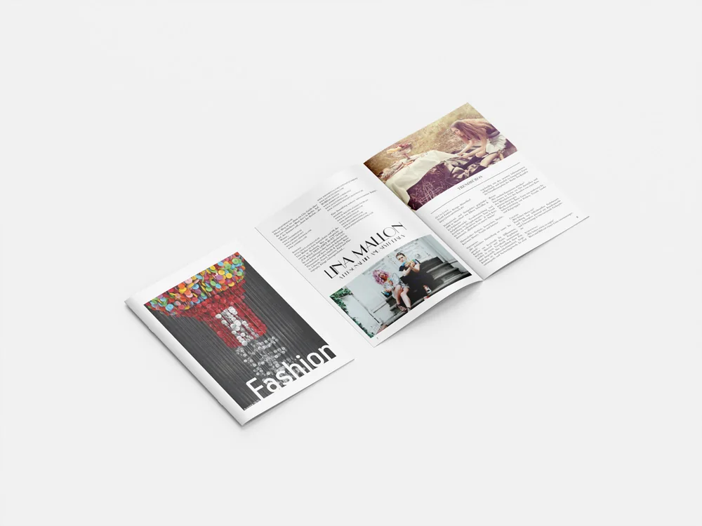

ModemagazinFashion Magazine
Eine Editorial-Publikation, die Mode, Kultur und urbane Geschichten verbindet. Ich habe die Bildsprache und die Seitenlayouts für unterschiedliche Inhaltsarten entwickelt und dabei ausdrucksstarke Bilder mit einer strukturierten redaktionellen Typografie ausbalanciert.
An editorial publication combining fashion, culture and urban stories. I developed the visual language and page layouts across different types of content, balancing expressive imagery with structured editorial typography.



